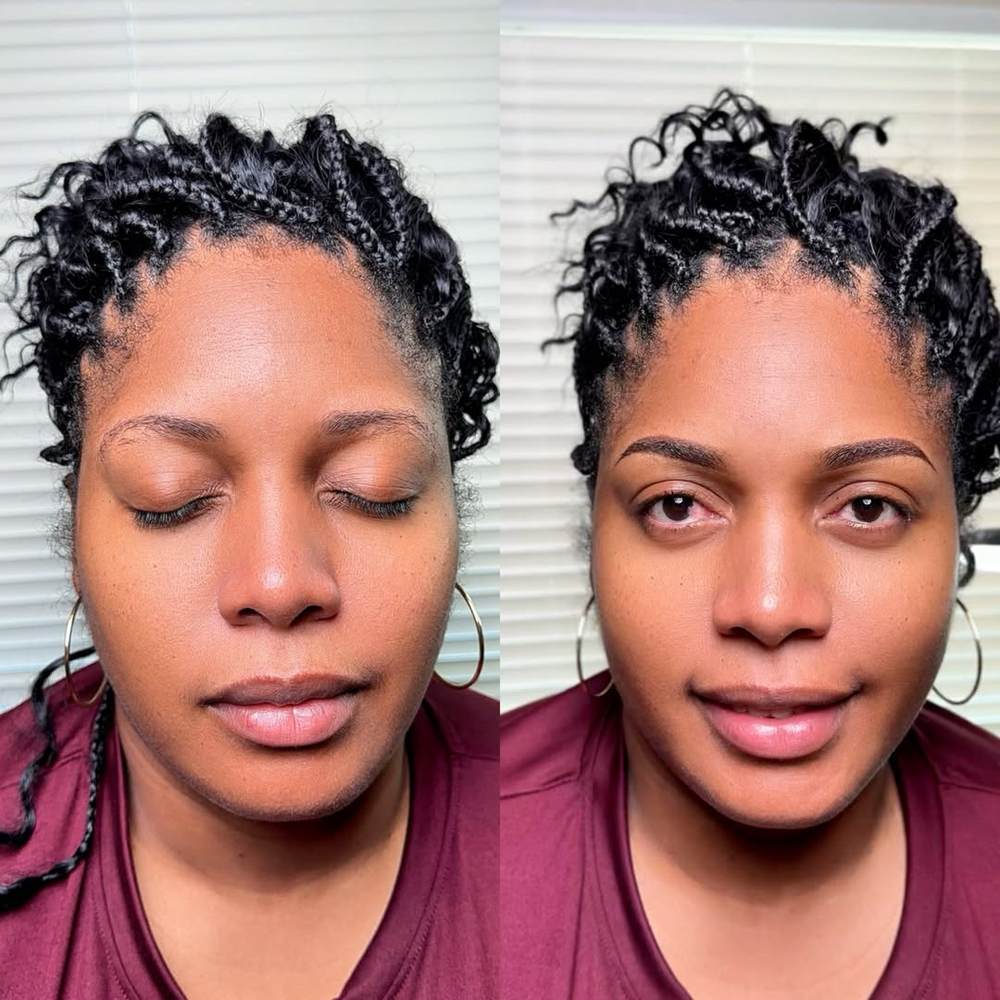
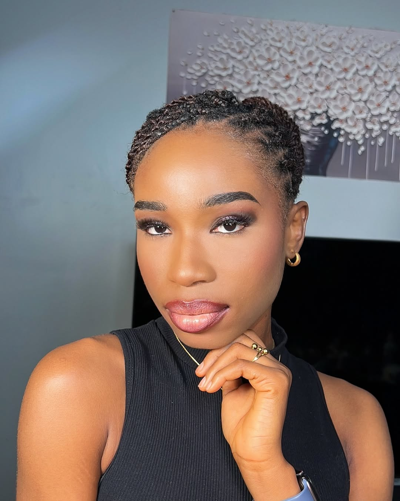
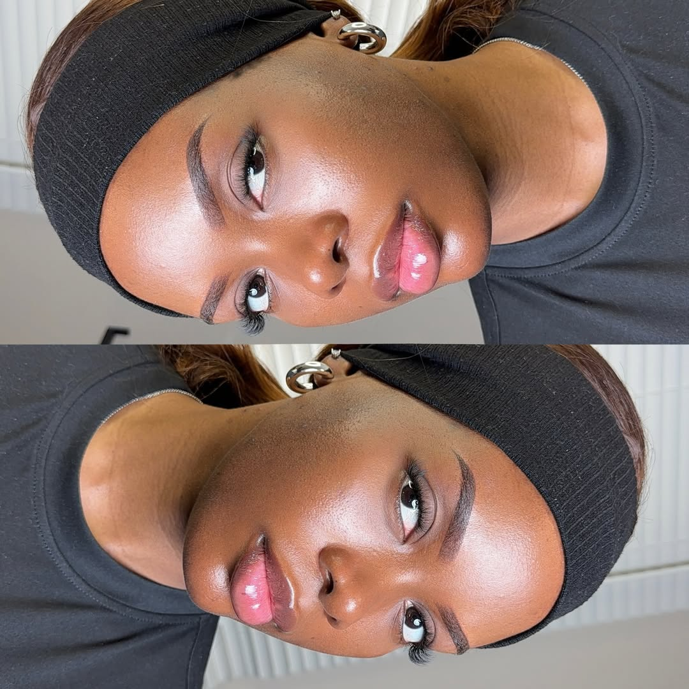
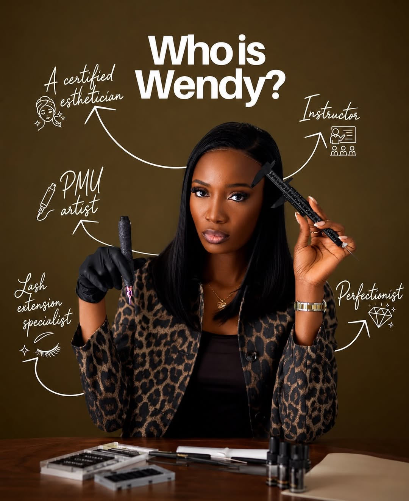
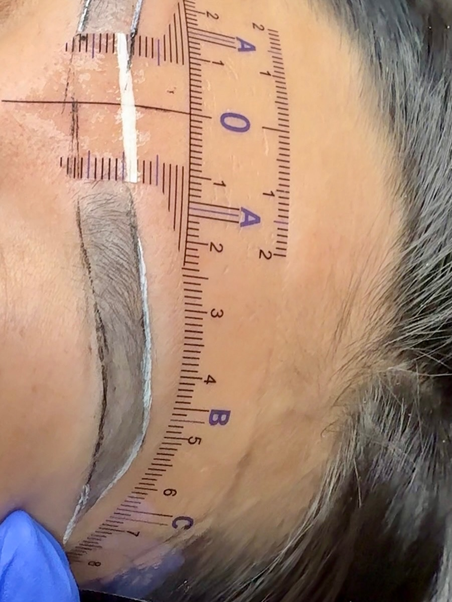
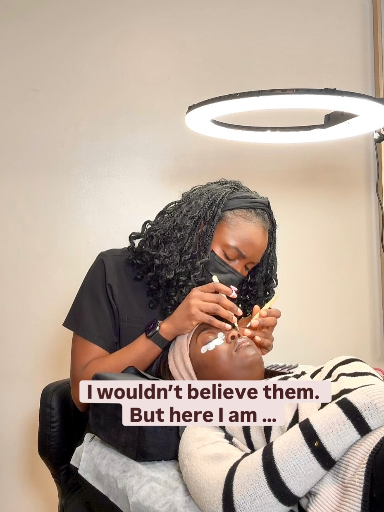
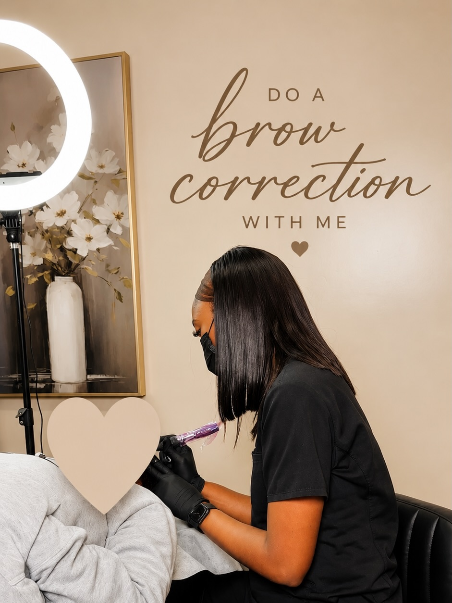
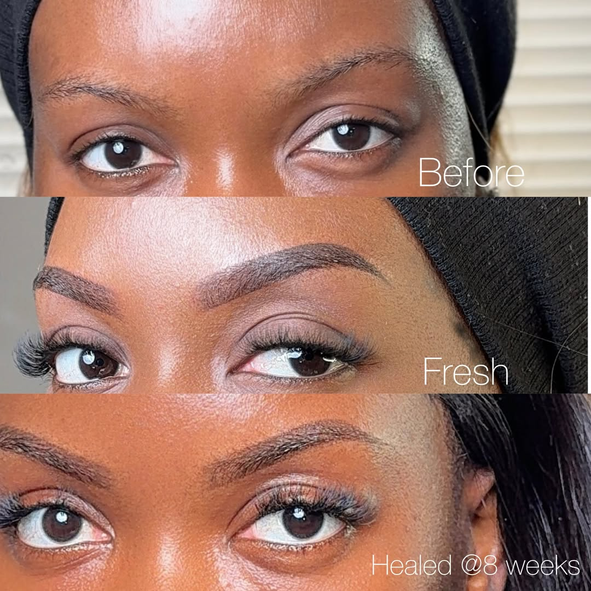
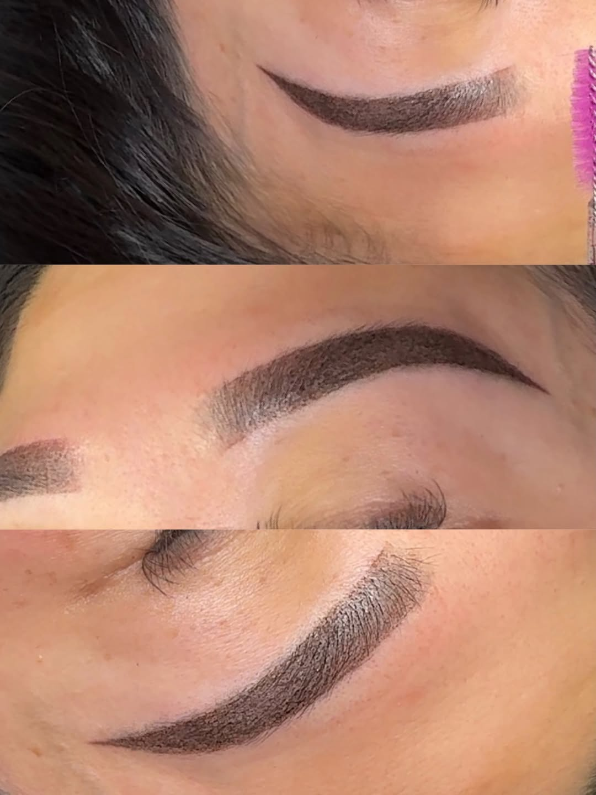

Ombre Powder Brows
Soft-shaded permanent brows customized to your natural features.
CA$350 · 2 hr 30 minSudbury Permanent Makeup & Lash Studio
Soft, natural-looking brows designed for your face, your features, and your everyday routine.



Brow perfection, one soft stroke at a time
Wendy Esthetics focuses on brows that look polished but still soft. Each service starts with shape, symmetry, and realistic expectations before pigment is applied.

Meet the artist
Certified esthetician, PMU artist, lash specialist, instructor, and detail-driven perfectionist. Wendy brings an editorial eye to permanent makeup, corrections, lashes, and makeup education.
Signature services
Soft-shaded permanent brows customized to your natural features.
CA$350 · 2 hr 30 minFor Wendy’s returning clients to refresh pigment and enhance shape.
CA$100 · 1 hrMaintenance appointment for existing Wendy Esthetics brow clients.
CA$200 · 1 hr 30 minFor clients with existing permanent brows done by another artist. Photos required before booking.
CA$250 · 2 hrColour neutralization and shape refinement for old permanent brows.
CA$450 · 2 hrFluffy, lightweight fans for a fuller lash look.
Price varies · 1 hr 15 min+Skin prep, everyday routine, brows, foundation matching, eyes, lashes, and product guidance.
CA$250 · 3 hr
Precision before pigment
Your brow goals, skin, previous work, and eligibility are reviewed before the appointment proceeds.
Shape and symmetry are mapped carefully so the final brow complements your features.
Powder shading is applied gradually to create soft definition without a harsh block effect.
Brows soften as they heal. Your final result develops over the healing period.
A touch-up helps refine pigment, shape, and healed results when needed.
The studio experience
This is a home-based studio with a one-client-at-a-time approach. Come alone, arrive prepared, and expect a focused appointment designed around detail and care.


Correction & cover-up
Grey, red, purple, and blue tones can often be corrected through colour neutralization and shape refinement. Clear photos are required before booking to confirm eligibility.
Before & after


Studio policies
Ombre brow clients must be 18+.
Not suitable if pregnant or breastfeeding.
Avoid alcohol, caffeine, aspirin, and fish oils 24 hours before appointment.
No threading, waxing, tinting, Botox, or chemical peels 2 weeks prior.
Clients with diabetes, chemotherapy history, glaucoma, viral infections, or keloid scarring should consult a doctor first.
Home-based studio. No kids, pets, or extra guests. Please come alone.
15-minute grace period.
Arrivals over 30 minutes may need to be rescheduled.
New correction clients must send clear brow photos before booking.
Client Words
“I finally stopped drawing my brows every morning.”
— Client, Ombre Powder Brows“Wendy is a true artist. I’m obsessed with my brows.”
— Client, Brow Correction“The studio is so calm and welcoming. I felt really comfortable.”
— ClientReady when you are